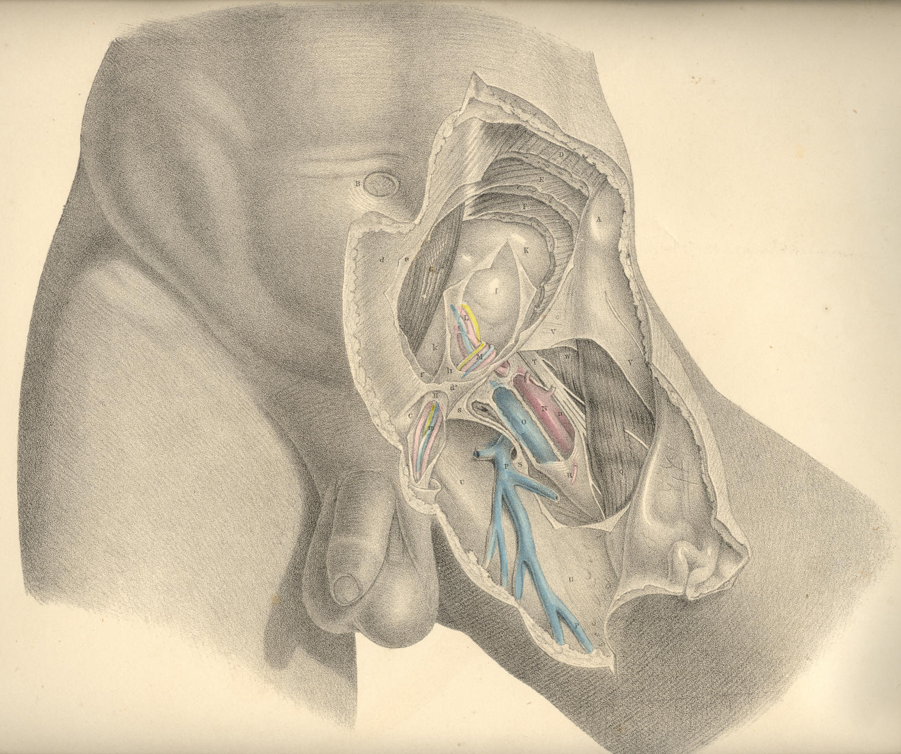

SURGICAL ANATOMY by JOSEPH MACLISE
COMMENTARY ON PLATES 30 & 31.
THE SURGICAL DISSECTION OF THE FIFTH, SIXTH, SEVENTH, AND EIGHTH
LAYERS OF THE INGUINAL REGION, AND THEIR CONNEXION WITH THOSE
OF THE THIGH.
When we remove the internal oblique and cremaster muscles, we expose the
transverse muscle, which may be regarded as the fifth inguinal layer, F,
Pl. 30. This muscle is similar in shape and dimensions to the internal
oblique. The connexions of both are also similar, inasmuch as they arise
from the inner edge of the crista ilii, and from the outer half of, V,
Poupart's ligament. The fleshy fibres of these two muscles vary but
little in direction, and terminate at the same place--viz., the linea
semilunaris, which marks the outer border of the rectus muscle. But
whilst the fleshy parts of these three abdominal muscles, D E F, form
successive strata in the groin, their aponeurotic tendons present the
following peculiarities of arrangement in respect to the rectus muscle.
The tendon of the external oblique, d,
passes altogether in front of the
rectus; that of the internal oblique is split opposite the linea
semilunaris into two layers, which enclose the rectus between them as
they pass to be inserted into the linea alba. But midway between the
navel and pubes, at the point marked G, both layers of the tendon are
found to pass in front of the rectus. The tendon of the transverse
muscle passes behind the rectus; but opposite the point G, it joins both
layers of the internal oblique tendon, and with this passes in front of
the rectus. The fibrous structure thus constituted by the union of the
tendons of the internal oblique and transverse muscles, e f, is named
the "conjoined tendon."
The conjoined tendon, f,
Plates 30 and 31, appears as a continuation of
the linea semilunaris, for this latter is in itself a result of the
union of the tendons of the abdominal muscles at the external border of
the rectus. As the conjoined tendon curves so far outwards to its
insertion into the pectineal ridge of the pubic bone, as to occupy a
situation immediately behind the external ring, it thereby fortifies
this part against the occurrence of a direct protrusion of the bowel.
But the breadth, as well as the density, of this tendon varies in
several individuals, and these will accordingly be more or less liable
to the occurrence of hernia.
The arched inferior border of the transverse muscle, F, Plate 30,
expresses by its abrupt termination that some part is wanting to it; and
this appearance, together with the fact that the fibres of this part of
the muscle blend with those of the internal oblique and cremaster, and
cannot be separated except by severing the connexion, at once suggests
the idea that the cremaster is a derivation from both these muscles.
Assuming this to be the case, therefore, it follows that when the
dissector removes the cremaster from the space L h, he himself causes
this vacancy in the muscular parietes of the groin to occur, and at the
same time gives unnatural definition to the lower border of the
transverse and oblique muscles. In a dissection so conducted, the cord
is made to assume the variable positions which anatomists report it to
have in respect to the neighbouring muscles. But when we view nature as
she is, and not as fashioned by the scalpel, we never fail to find an
easy explanation of her form.
In the foetus, prior to the descent of the testicle, the cremaster
muscle does not exist. (Cloquet, op cit.) From this we infer, that those
parts of the muscles, E F, Plate 30, which at a subsequent period are
converted into a cremaster, entirely occupy the space L h. In the adult
body, where one of the testicles has been arrested in the inguinal
canal, the muscles, E F, do not present a defined arched margin, above
the vacant space L h, but are
continued (as in the foetus) as low down
as the external abdominal ring. In the adult, where the testicle has
descended to the scrotum, the cremaster exists, and is serially
continuous with the muscles, E F, covering the space L h; the meaning of
which is, that the cremasteric parts of the muscles, E F, cover this
space. The name cremaster therefore must not cancel the fact that the
fibres so named are parts of the muscles, E F. Again, in the female
devoid of a cremaster, the muscles, E F, present of their full
quantities, having sustained no diminution of their bulk by the
formation of a cremaster. But when an external inguinal hernia occurs in
the female body, the bowel during its descent carries before it a
cremasteric covering at the expense of the muscles E F, just in the same
way as the testicle does in the foetus. (Cloquet.)
From the above-mentioned facts, viewed comparatively, it seems that the
following inferences may be legitimately drawn:--1st, that the space L h
does not naturally exist devoid of a muscular covering; for, in fact,
the cremaster overlies this situation; 2nd, that the name cremaster is
one given to the lower fibres of the internal oblique and transverse
muscles which cover this space; and 3rd, that to separate the
cremasteric elongation of these muscles, and then describe them as
presenting a defined arched margin, an inch or two above Poupart's
ligament, is an act as arbitrary on the part of the dissector as if he
were to subdivide these muscles still more, and, while regarding the
subdivisions as different structures, to give them names of different
signification. When once we consent to regard the cremaster as
constituted of the fibres originally proper to the muscles, E F, we then
are led to the discovery of the true relations of the cord in respect to
these muscles.
On removing the transverse muscle, we expose the inguinal part of the
transversalis fascia--the sixth
inguinal layer, L h,
Plate 30--K k,
Plate 31. This fascia or membrane affords a general lining to the
abdominal walls, in some parts of which it presents of a denser and
stronger texture than in others. It is stretched over the abdomen
between the muscles and the peritonaeum. The fascia iliaca, the fascia
pelvica, and the fascia transversalis, are only regional divisions of
the one general membrane. On viewing this fascia in its totality, I find
it to exhibit many features in common with those other fibrous
structures which envelope serous cavities. The transversalis fascia
supports externally the peritonaeum, in the same way as the dura mater
supports the arachnoid membrane, or as the pleural fascia supports the
serous pleura. While the serous membranes form completely shut sacs, the
fibrous membranes which lie external to those sacs are pierced by the
vessels which course between them and the serous membranes, and afford
sheaths or envelopes for these vessels in their passage from the
interior to the external parts. The sheath, H h, Plates 30 and 31, which
surrounds the spermatic vessels, and the sheath, R, Plate 31, which
envelopes the crural vessels, are elongations of the fascia
transversalis.
In the groin, the transversalis fascia, K k, Plate 31, presents, in
general, so dense a texture as to offer considerable resistance to
visceral pressure. Here it is stretched between the transverse muscle,
F, Plate 31, and the peritonaeum, I. It adheres to the external surface
of the peritonaeum, and to the internal surface of the transverse
muscle, by means of an intervening cellular tissue. It is connected
below to Poupart's ligament, along the line of which it joins the fascia
iliaca. It lines the lower posterior aspect of the rectus muscle, where
this is devoid of its sheath; and it is incorporated with f, the
conjoined tendon, thereby fencing the external abdominal ring.
Immediately above the middle of Poupart's ligament, this membrane, at
the point marked h, Plate
30, is pouched into a canal-shaped elongation,
which invests the spermatic vessels as far as the testicle in the
scrotum; and to this elongation is given the names "fascia spermatica
interna" (Cooper), "fascia infundibuliform" (Cloquet). The same part,
when it encloses an external oblique hernia, is named "fascia propria."
The neck or inlet of this funnel-shaped canal is oval, and named the
"internal abdominal ring." As this ring looks towards the interior of
the abdomen, and forms the entrance of the funnel-shaped canal, it
cannot of course be seen from before until we slit open this canal.
Compare the parts marked H h
in Plates 30 and 31.
The inguinal and iliac portions of the fascia transversalis join along
the line of Poupart's ligament, A C. The iliac vessels, in their passage
to the thigh, encounter the fascia at the middle third of the crural
arch formed by the ligament, and take an investment (the sheath, R) from
the fascia. The fore part of this sheath is mentioned as formed by the
fascia transversalis--the back part by the fascia iliaca; but these
distinctions are merely nominal, and it is therefore unnecessary to
dwell upon them. The sheath of the femoral vessels is also
funnel-shaped, and surrounds them on all sides. Its broad entrance lies
beneath the middle of Poupart's ligament. Several septa are met with in
its interior. These serve to separate the femoral vessels from each
other. The femoral vein, O, Plate 30, is separated from the falciform
margin, S s, of the saphenous
opening by one of these septa. Between
this septum and the falx an interval occurs, and through it the crural
hernia usually descends. These parts will be more particularly noticed
when considering the anatomy of crural hernia.
Beneath the fascia transversalis is found the subserous cellular
membrane, which serves as a connecting medium between the fascia and the
peritonaeum. This cellular membrane may be considered as the seventh
inguinal layer. It is
described by Scarpa (sull' Ernie) as forming an
investment for the spermatic vessels inside the sheath, where it is
copious, especially in old inguinal hernia. It is also sometimes mixed
with fatty tissue. In it is found embedded the infantile cord--the
remains of the upper part of the peritoneal tunica vaginalis--a
structure which will be considered in connexion with congenital herniae.
By removing the subserous cellular tissue, we lay bare the peritonaeum,
which forms the eighth layer of the
inguinal region. Upon it the
epigastric and spermatic vessels are seen to rest. These vessels course
between the fascia transversalis and the peritonaeum. The internal ring
which is formed in the fascia, K h,
may be now seen to be closed by the
peritonaeum, I. The inguinal canal, therefore, does not, in the normal
state of these parts, communicate with the general serous cavity; and
here it must be evident that before the bowel, which is situated
immediately behind the peritonaeum, I, can be received into the canal, H
h, it must either rupture that
membrane, or elongate it in the form of a
sac.
The exact position which the epigastric, L, Plate 31, and spermatic
vessels, M, bear in respect to the internal ring, is a point of chief
importance in the surgical anatomy of the groin; for the various forms
of herniae which protrude through this part have an intimate relation to
these vessels. The epigastric artery, in general, arises from the
external iliac, close above the middle of Poupart's ligament, and
ascends the inguinal wall in an oblique course towards the navel. It
applies itself to the inner border of the internal ring, and here it is
crossed on its outer side by the spermatic vessels, as these are about
to enter the inguinal canal.
The inguinal canal is the natural channel through which the spermatic
vessels traverse the groin on their way to the testicle in the scrotum.
In the remarks which have been already made respecting the several
layers of structures found in the groin, I endeavoured to realize the
idea of an inguinal canal as consisting of elongations of these layers
invaginated the one within the other, the outermost layer being the
integument of the groin elongated into the scrotal skin, whilst the
innermost layer consisted of the transversalis fascia elongated into the
fascia spermatica interna, or sheath. The peritonaeum, which forms the
eighth layer of the groin, was seen to be drawn across the internal ring
of this canal above in such a way as to close it completely, whilst all
the other layers, seven in number, were described as being continued
over the spermatic vessels in the form of funnel-shaped investments, as
far down as the testicle.
With the ideas of an inguinal canal thus naturally constituted, I need
not hesitate to assert that the form, the extent, and the boundaries of
the inguinal canal, as given by the descriptive anatomist, are purely
conventional, and do not exist until after dissection; for which reason,
and also because the form and condition of these parts so described and
dissected do not appear absolutely to correspond in any two individuals,
I omit to mention the scale of measurements drawn up by some eminent
surgeons, with the object of determining the precise relative position
of the several parts of the inguinal region.
The existence of an inguinal canal consisting, as I have described it,
of funnel-shaped elongations from the several inguinal layers continued
over the cord as far as the testicle, renders the adult male especially
liable to hernial protrusions at this part. The oblique direction of the
canal is, in some measure, a safeguard against these accidents; but this
obliquity is not of the same degree in all bodies, and hence some are
naturally more prone to herniae than others.
DESCRIPTION OF THE FIGURES OF PLATES 30 & 31.
PLATE 30.
A. The anterior superior iliac spine.
B. The umbilicus.
C. The spine of the pubis.
D. The external oblique muscle; d,
its tendon. .
E. The internal oblique muscle; e,
its tendon.
F. The transverse muscle; f,
its tendon, forming, with e,
the conjoined
tendon.
G. The rectus muscle enclosed in its sheath.
H. The fascia spermatica interna covering the cord; h, its funnel-shaped
extremity.
I, K, L, M. See Plate 31.
N. The femoral artery; n, its
profunda branch.
O. The femoral vein.
P. The saphena vein.
Q. The sartorius muscle.
R. The sheath of the femoral vessels.
S. The falciform margin of the saphenous opening.
T. The anterior crural nerve.
U. The pubic portion of the fascia lata.
V. The iliac portion attached to Poupart's ligament.
W. The lower part of the iliacus muscle.
PLATE 30
PLATE 31.
A. The anterior superior iliac spine.
B. The umbilicus.
C. The spine of the pubis.
D. The external oblique muscle; d,
its tendon; d*, the external
ring.
E. The internal oblique muscle.
F. The transverse muscle; f,
its tendon; forming, with e,
the conjoined
tendon.
G. The rectus muscle laid bare.
H h. The fascia spermatica
interna laid open above and below d*,
the
external ring.
I. The peritonaeum closing the internal ring.
K. The fascia transversalis; k,
its pubic part.
L. The epigastric artery and veins.
M. The spermatic artery, veins, and vas deferens bending round the
epigastric artery at the internal ring; m, the same
vessels below
the external ring.
N. The femoral artery; n, its
profunda branch.
O. The femoral vein, joined by--
P. The saphena vein.
Q. The sartorius muscle.
R. The sheath of the femoral vessels.
S S. The falciform margin of the saphenous opening,
T. The anterior crural nerve.
U. The pubic part of the fascia lata.
V. The iliac part of the fascia lata.
W. The lower part of the iliacus muscle.

Plate 31
COMMENTARY ON PLATES 32,
33, & 34